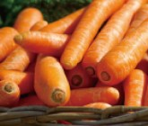
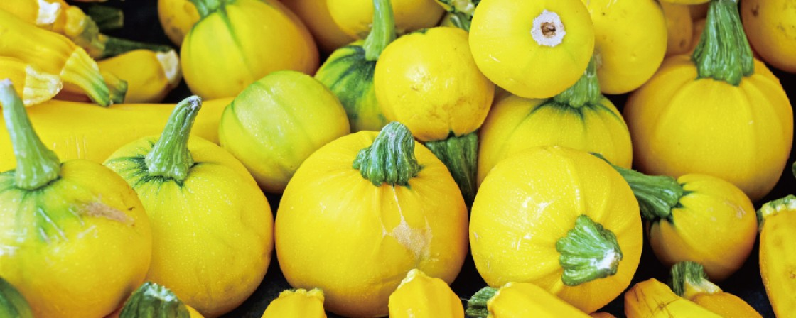
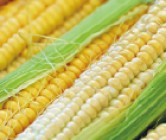
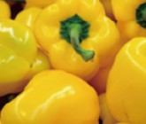

Carrots are crunchy, sweet root vegetables. They are rich in beta-carotene and vitamin A, vital for maintaining healthy vision.


Carrots are crunchy, sweet root vegetables. They are rich in beta-carotene and vitamin A, vital for maintaining healthy vision.

Corn is a vital global cereal grain widely consumed by humans and animals, and used in diverse industrial produces.

Sweet peppers are vibrant, crisp, and nutrient-packed vegetables enjoyed raw or cooked in cuisines worldwide.
For any questions or suggestions about Vegetables, Vegetables Club or your online order you can contact Vegetables Customer Service by phone, email or post and we'll be happy to help.
E-mail : Vegetables@aaabbcc.com
PHONE : +886-123-456-789